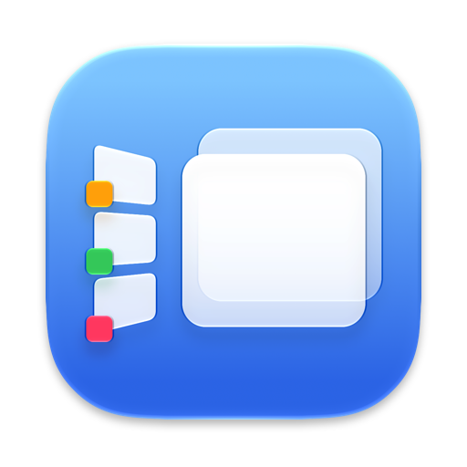

brew install eugene-tea/tap/stage-managerOut of the box it looks and works like Apple’s Stage Manager, never against it. Improvements that fit Apple’s way are on; the rest are a switch away in Settings.
Your stages, their order and the stage in front come back after a reboot, as fully as macOS allows.
Drop one card on another to make one stage. Drag a window to the strip to split it off.
Each stage keeps its place, or follows your Dock’s order. Windows can keep clear of the strip.
Open an app straight into the stage you are in. Hold Shift to give it a stage of its own.
⌃⌥1–9 to switch stages or send a window. Nothing needs one.
Quit, crash or update: every hidden window comes back.
Everything else lives in one plain file. Ask an AI assistant to change it; Settings → Advanced shows how.
A small welcome window walks you through it.
Nothing about your windows leaves your Mac. One daily update check on GitHub, which you can turn off.